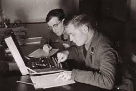

| 1-Contribuciones a la Segunda Guerra Mundial: Durante la Segunda Guerra Mundial, Turing trabajó en Bletchley Park, el centro británico de decodificación de códigos.

|
| 2-Contribuciones a la inteligencia artificial: Turing es famoso por la prueba de Turing, propuesta en su artículo "Computing Machinery and Intelligence" |
| 3-Modelo Matemático de la Morfogénesis: Además de sus contribuciones directas a la computación, Turing también incursionó en la biología matemática. |
| 4-Teoría de la computación: Además de su trabajo pionero en las máquinas de Turing, Turing también realizó importantes contribuciones a la teoría de la computación. |
| 5-Desarrollo del ACE: En la década de 1940, Turing trabajó en el diseño del Automatic Computing Engine, un proyecto para desarrollar una computadora electrónica |
| 6-Premios y Reconocimientos: Alan Turing recibió varios premios y reconocimientos por su trabajo, incluido el nombramiento como Oficial de la Orden del Imperio Británico. |